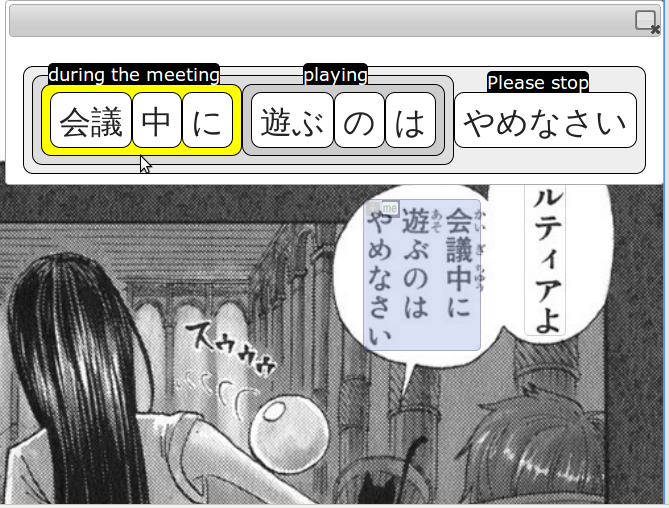

<h1>GrammarVis</h1>

GrammarVis visualizes the grammar (syntactic structure) of sentences in a foreign language, to help learners learn the word order.<br/>

<h3>Try it</h3>

It can be used standalone (<a href="http://geza.csail.mit.edu:1357/?lang=zh&sentence=蛇是無足的爬蟲類動物的總稱">sample sentence</a>), or as a <a href="https://chrome.google.com/webstore/detail/foreign-manga-reader/oelafafpfbkjcppeieeejdokeiabelgj">Chrome Extension</a> for viewing articles and manga (<a href="http://nb.mit.edu/subscribe?key=Kv6Jy3SNMDelw5wo0UAyeSkaLSgHpErVWEDGEnB2XlHGNsN17c">examples - install the extension first</a>).

<h3>Screenshot</h3>



<h3>Contact</h3>

GrammarVis was developed by <a href="http://gkovacs.github.com">Geza Kovacs</a>.

